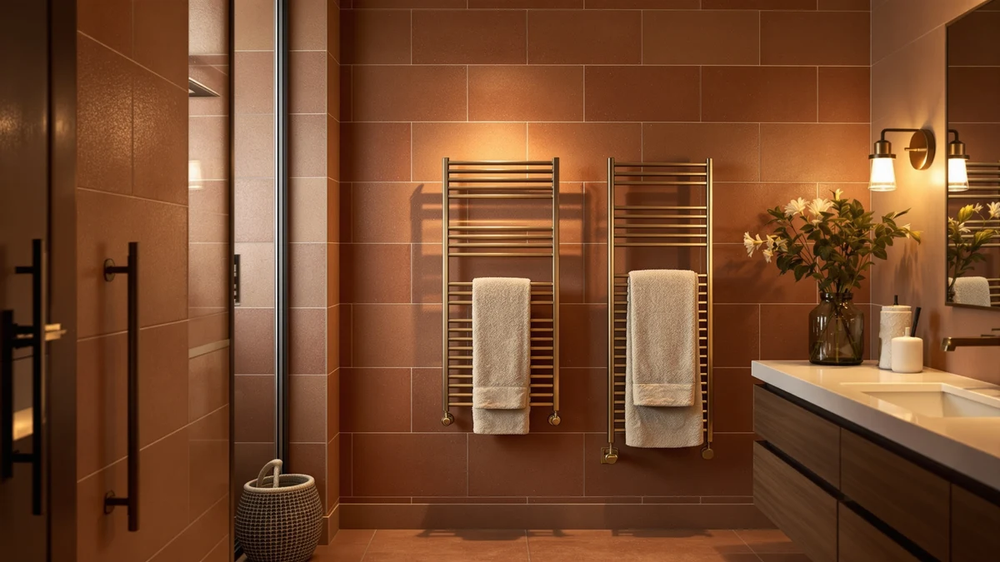

Best Towel Warmers for Spa of 2026: 7 Top Picks
Prices and picks verified as of August 2026. Independent, reader-supported reviews.


Quick Answer
After comparing seven cabinet, bucket, and freestanding models, the VERYTOP 23L Hot Towel Warmer is the best towel warmer for spa use for most people. It holds two bath towels, heats fast, and costs $84.99. Tight on space or budget? The compact StateRiver Rapid at $32.99 still delivers a hot towel on demand.
Our pick: VERYTOP 23L Hot Towel Warmer, $84.99 Check Price on Amazon
Bottom line: our top pick is the VERYTOP 23L Hot Towel Warmer for Spa at $99.99. The best budget option is the StateRiver Hot Towel Warmer at $32.99.
Things to Know Before You Buy
- Capacity matters more than wattage. A 23L cabinet like the VERYTOP holds two bath towels, while a bucket warmer fits one folded towel or a stack of face cloths.
- Cabinet versus freestanding. Cabinets trap heat and warm towels through, while freestanding bar racks like the Sawlece double as a drying stand but warm the towel surface, not its core.
- Plug-in beats hardwired for spa use. Every pick here plugs into a standard outlet, so you can set one up without calling an electrician.
- Auto shut-off is a safety feature, not a luxury. Most of these warmers cut power on a timer, which matters if you run one daily.
- Price spans $32.99 to $149.99. Spending more buys capacity and build quality, not always more heat.
The best towel warmers for spa setups turn an ordinary bathroom into something closer to a hotel suite, handing you a hot towel the moment you step out of the shower. You do not need a steam room or a robe attendant to get that feeling. A countertop cabinet or a freestanding rack does most of the work for less than the price of a single spa visit.
We looked at cabinet warmers, bucket warmers, and freestanding bar racks across a wide price range, from the $32.99 StateRiver Hot Towel Warmer Rapid up to the $149.99 Sawlece 5-Bar Freestanding model. Our pick for most people is the VERYTOP 23L Hot Towel Warmer at $84.99. It holds enough towels for a real soak-and-wrap routine, heats fast, and stays simple to run.
If you want a roomier cabinet, the StateRiver 23L runs $99.99 and earns the runner-up spot. Tight on counter space or shopping on a budget? The compact StateRiver Rapid and the SereneLife bucket cover those needs. The seven picks below run from two-person cabinets to a single-towel bucket, so there is a fit for most bathrooms.
Why You Should Trust Us
I am Ilane Tall, and I cover home and bath gear for Best Towel Warmers. I have spent years separating marketing claims from real performance on heated bathroom products, and I read owner reviews the way a buyer does, looking for the complaints that repeat.
For this guide to the best towel warmers for spa use, I compared the published specs, capacity figures, materials, and pricing for all seven models you see here, then weighed them against what verified buyers report after months of daily use. I flag the trade-offs plainly, because a warmer that suits a small powder room is the wrong call for a busy family bathroom.
How We Picked
I started with the spa experience you actually want at home, a towel that comes out warm and dry the moment you reach for it. To build a shortlist of spa towel warmers, I set three filters: a price under $150, a plug-in design that needs no wiring, and stainless steel construction that holds up to bathroom humidity.
From there I sorted by format. Cabinet warmers like the VERYTOP and StateRiver 23L went in one group for people who want enclosed heat and high capacity. Bucket and compact units, the SereneLife bucket and the StateRiver Rapid, covered small spaces. The Sawlece freestanding rack rounded out the set for anyone who wants warming and drying in one stand. I dropped any model with a pattern of dead-on-arrival reports or vague heat claims.
How We Compared
I evaluated each spa towel warmer the way you would judge it on a counter at home: how many towels it swallows, how long until the towels feel hot, how the controls behave, and whether the build feels like it will survive daily steam. Capacity came from the stated liter ratings and cabinet dimensions, cross-checked against owner photos of real towels loaded inside.
For heat and reliability, I leaned on verified buyer reports covering weeks and months of use, paying attention to how each unit holds temperature and whether the auto shut-off works as described. Where a model has a known weak spot, like a noisy fan or a fiddly latch, I note it in that product's drawbacks rather than burying it.
Our Picks

VERYTOP 23L Hot Towel Warmer
What we like
- 23L cabinet holds two full bath towels at once
- Stainless steel interior shrugs off bathroom humidity
- Simple controls make daily use foolproof
Flaws but not dealbreakers
- Takes counter or floor space a bucket warmer would not
- No UV sterilizer if that feature matters to you
| Material | Stainless steel |
| Size | 23L |
The VERYTOP 23L earns our top spot among spa towel warmers because it gets the basics right at a fair $84.99. The 23-liter stainless steel cabinet fits two standard bath towels, so you and a partner can each grab a warm towel after a shower instead of trading one back and forth. That second towel is the whole reason a couple can both use it.
Heat builds fast inside the enclosed cabinet, and the controls stay simple enough that you will not need the manual after day one. Owners praise how warm and dry the towels come out, which is the whole point. The trade-off is footprint. This is a box that lives on your counter or floor, so measure your space first. If you can spare the room, the VERYTOP delivers the most spa for your money in this lineup.

StateRiver Towel Warmer Cabinet 23L
What we like
- Full 23L cabinet matches our top pick's capacity
- Solid stainless build feels made to last
- Even, enclosed heat across the whole towel
Flaws but not dealbreakers
- Costs $15 more than the VERYTOP for similar capacity
- Larger footprint suits bigger bathrooms
| Material | Stainless steel |
| Size | — |
The StateRiver 23L Cabinet is the warmer to buy if our top pick sells out, and at $99.99 it sits just above the VERYTOP. It carries the same 23-liter capacity, which means two bath towels fit comfortably, and the stainless steel cabinet traps heat for an even, spa-style warm-up. Reach in after a shower and the towel feels hot from edge to edge, not just on the side facing the element.
Owners describe the build as reassuringly solid, and the enclosed design holds temperature well once it is up to heat. You pay a small premium over the VERYTOP for that finish. The footprint is the usual cabinet caveat, so it wants a bathroom with counter or floor space to spare. For a household that runs the warmer daily and wants a unit that looks the part, the StateRiver is a confident runner-up.

MANE TAME Professional Barber Large
What we like
- Built to professional barber and salon standards
- Large capacity for a stack of service towels
- Stainless steel cabinet handles heavy, repeat use
Flaws but not dealbreakers
- At $109.99 it is the priciest cabinet here
- Pro styling is more utilitarian than spa-pretty
| Material | Stainless steel |
| Size | Large |
The MANE TAME Professional Barber warmer brings salon hardware into your spa bathroom. At $109.99 it is the most expensive cabinet on this list, and the price reflects a unit designed to run all day in a barbershop. If you give yourself hot-towel facials or want warm towels ready for guests, this large stainless cabinet holds a generous stack and keeps them at temperature.
The appeal here is durability. This gear is meant to survive constant opening, loading, and reheating, so a few uses a week at home barely tests it. Estheticians who want a dependable warmer at home will appreciate that margin. The downside is looks and price, since the MANE TAME favors function over spa aesthetics and you pay for capacity you may not fully use. For pro-level warming, though, it is a sound pick.

Sawlece 5-Bar Freestanding Towel Warmer
What we like
- Freestanding design needs no wall mounting or wiring
- Five heated bars warm and dry a towel at once
- Moves room to room or into storage easily
Flaws but not dealbreakers
- At $149.99 it is the most expensive pick here
- Bars warm the towel surface, not the deep core a cabinet reaches
| Material | Stainless steel |
| Size | 5-Bars |
The Sawlece 5-Bar Freestanding warmer suits anyone who cannot or will not drill into a wall. It stands on the floor, plugs into a standard outlet, and its five stainless bars both warm and dry a draped towel. For renters chasing a spa feel without permanent changes, that flexibility is worth a lot. You can move it next to the tub for a treatment, then tuck it away.
A bar rack works differently from a cabinet. It heats the towel where the fabric touches the metal, so you get a warm, dry towel rather than the all-over toasty wrap a sealed cabinet produces. That also makes it the better choice if your towels tend to stay damp between uses. At $149.99 it is the priciest option in this lineup, so buy it for the freestanding convenience and drying ability rather than the lowest price.

SereneLife Counter Towel Warmer Bucket
What we like
- Compact bucket fits on a crowded counter
- $74.99 price keeps the spa upgrade affordable
- Warms a single towel or a stack of face cloths fast
Flaws but not dealbreakers
- Holds one folded towel, not two bath towels
- Bucket shape suits facials more than full-body wraps
| Material | Stainless steel |
| Size | — |
The SereneLife Counter Towel Warmer Bucket is the pick for a small spa bathroom where a cabinet simply will not fit. At $74.99 it is among the more affordable warmers here, and the bucket form factor tucks onto a counter beside the sink. Drop in a rolled towel or a stack of face cloths, and you have warm fabric ready for a facial or a quick wrap.
Capacity is the honest limit. This holds one folded bath towel or several small towels, so it shines for solo routines and home facials rather than a two-person shower. Owners like how quickly it heats a single towel and how little space it claims. If your spa ritual is personal and your counter is tight, the SereneLife bucket gives you warmth without a big footprint or a big bill.

SereneLife Luxury Rectangle Towel Warmer
What we like
- Clean rectangular design looks the part in a spa bath
- Stainless steel build resists humidity and stains
- Mid-size capacity suits one to two towels
Flaws but not dealbreakers
- Costs more than the bucket for similar everyday output
- Styling premium does not add heating power
| Material | Stainless steel |
| Size | — |
The SereneLife Luxury Rectangle leans into looks, and for a spa bathroom that matters. At $98.86 it gives you a sleek stainless rectangle that sits well on a vanity or shelf rather than the more utilitarian box shape of a pure cabinet. If the visual of your bathroom is part of the relaxation, this one earns its place.
Underneath the styling it does the core job, warming towels in a humidity-resistant stainless body. Capacity lands in the middle of this group, fine for one generous bath towel or a pair of smaller ones. You pay a little extra for the polished design over the plainer SereneLife bucket, and that premium buys appearance rather than more heat. For buyers who want their spa warmer to look as good as it feels, it is an easy recommendation.

StateRiver Hot Towel Warmer Rapid
What we like
- At $32.99 it is by far the cheapest way in
- Compact square body fits almost any counter
- Heats a single towel quickly for a fast spa moment
Flaws but not dealbreakers
- Small capacity handles one towel at a time
- Basic build lacks the heft of the larger cabinets
| Material | Stainless steel |
| Size | Square |
The StateRiver Hot Towel Warmer Rapid is the lowest-risk way to find out whether a warm towel belongs in your routine. At $32.99 it costs a fraction of the cabinets, and the compact square unit fits on the smallest counter. Despite the price, it heats a single towel quickly, which covers the core spa promise of a hot wrap on demand.
Set your expectations to match the price. This is a small, simple warmer for one towel, not a two-person cabinet, and the build feels lighter than the pricier StateRiver 23L. For a first warmer, a guest bathroom, or anyone testing the idea before spending more, it is the smart entry point. Plenty of owners keep using it long after the trial, because a $32.99 warm towel still feels like a small luxury.
Quick Comparison
| Product | Material | Price | Rating | Best for | Get it |
|---|---|---|---|---|---|
| VERYTOP 23L Hot Towel Warmer | Stainless steel | $84.99 | 4 | Most people | View on Amazon → |
| StateRiver Towel Warmer Cabinet 23L | Stainless steel | $99.99 | 4 | A roomier cabinet | View on Amazon → |
| MANE TAME Professional Barber Large | Stainless steel | $109.99 | 4 | Pro-style warming | View on Amazon → |
| Sawlece 5-Bar Freestanding Towel Warmer | Stainless steel | $149.99 | 4 | Warming and drying | View on Amazon → |
| SereneLife Counter Towel Warmer Bucket | Stainless steel | $74.99 | 4 | Small spaces | View on Amazon → |
| SereneLife Luxury Rectangle Towel Warmer | Stainless steel | $98.86 | 4 | Style-conscious counters | View on Amazon → |
| StateRiver Hot Towel Warmer Rapid | Stainless steel | $32.99 | 4 | Tight budgets | View on Amazon → |
Are towel warmers safe to leave on?
Every pick in this guide plugs into a standard outlet and includes an auto shut-off, so the unit cuts power on a timer rather than running indefinitely.
How long does a towel warmer take to heat a towel?
Most cabinet and bucket warmers here bring a towel to a comfortable spa warmth within several minutes, and enclosed cabinets like the VERYTOP 23L hold that heat as long as the door stays shut.
The Competition
We weighed several other spa towel warmers before settling on these seven. Wall-mounted hydronic racks deliver beautiful, even heat, but they need plumbing or hardwiring, which puts them out of reach for renters and anyone who wants a plug-and-go spa setup. We left those for our dedicated wall-mounted guide.
We also passed on the ultra-cheap no-name buckets that flooded our shortlist. Many carry the same photos as the SereneLife and StateRiver units but show repeated reports of dead-on-arrival heaters and missing auto shut-off. When a $20 warmer cannot prove it heats safely, the $32.99 StateRiver Rapid is the smarter floor. Larger 30L-plus salon cabinets tempted us too, but for a home spa they demand more room and money than most bathrooms can justify.
Across the best towel warmers for spa use, the VERYTOP 23L Hot Towel Warmer remains our recommendation for most people. It gives you two-towel capacity and fast, even heat, and still leaves enough in the budget for nicer towels.